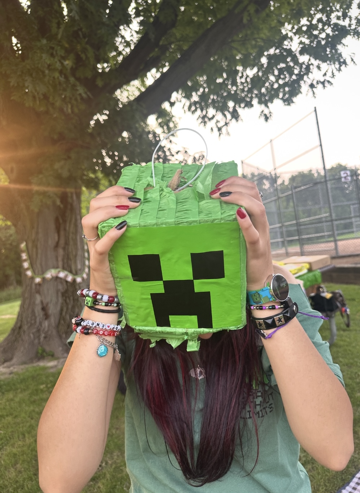

Allison is the owner of two awesome cats and a student at Michigan State University. She is a junior and a Games and Interactive Media major, who is currently interested in learning more about website design. Her favorite things about them are:
The picture below demonstrates her love for games, as she had a Minecraft themed birthday party this year for her 20th birthday. The item on her head is the head of a creeper pinata and it was filled with awesome candy.
